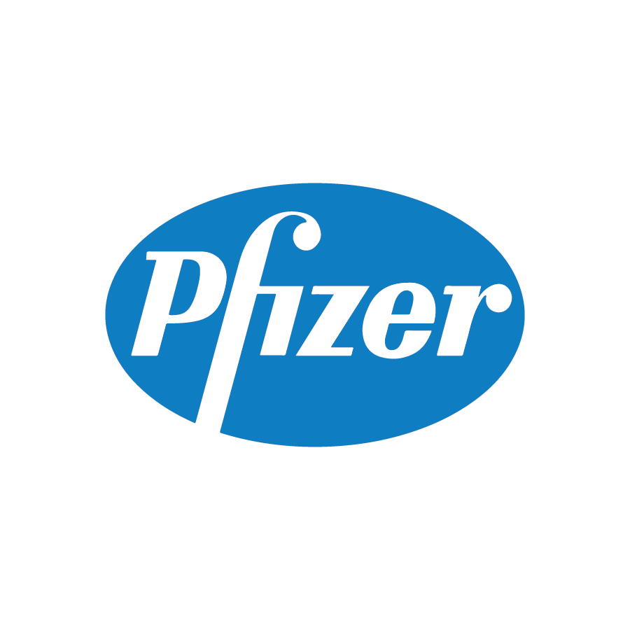
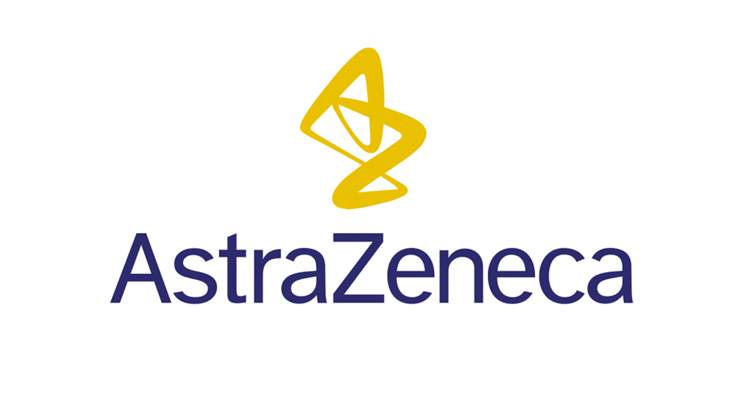

What are Vaccines
Vaccines contain the same germs that cause disease. (For example, measles vaccine contains measles virus, and Hib vaccine contains Hib bacteria.) But they have been either killed or weakened to the point that they don’t make you sick.
Some vaccines contain only a part of the disease germ.
Four Main Types of Covid-19 Vaccines
There are four categories of vaccines in clinical trials: Whole Virus, Protein Subunit, Viral Vector and Nucleic Acid.
Pfizer-BioNtech
Type: Nucleic Acid
Effectiveness: 95%
The Pfizer-BioNTech vaccine is recommended for people 12 years and older.
This vaccine is administered by giving you a shot in the muscle of your upper arm.
You are required to take 2 doses of this vaccine 21 days apart.
If you have had a severe allergic reaction (anaphylaxis) or an immediate allergic reaction, even if it was not severe, to any ingredient in an mRNA COVID-19 vaccine (such as polyethylene glycol), you should not get either of the mRNA COVID-19 vaccines.
If you had a severe or immediate allergic reaction after getting the first dose of an mRNA COVID-19 vaccine, you should not get a second dose of either of the mRNA COVID-19 vaccines. An immediate allergic reaction means a reaction within 4 hours of exposure, including symptoms such as hives, swelling, or wheezing (respiratory distress).
The most commonly reported side effects, which typically lasted several days, were pain at the injection site, tiredness, headache, muscle pain, chills, joint pain, and fever. Of note, people experienced these side effects more after the second dose than after the first dose, so it is important for vaccination providers and recipients to expect that there may be some side effects after either dose, but even more so after the second dose.
Moderna

Type: Nucleic Acid
Effectiveness: 94.1%
The Moderna vaccine is recommended for people aged 18 years and older.
This vaccine is given to you in the muscle of the upper arm. You are required to take two doses of the vaccine 28 days apart.
If you have had a severe allergic reaction (anaphylaxis) or an immediate allergic reaction, even if it was not severe, to any ingredient in an mRNA COVID-19 vaccine (such as polyethylene glycol), you should not get an mRNA COVID-19 vaccine.
If you had a severe or immediate allergic reaction after getting the first dose of an mRNA COVID-19 vaccine, you should not get a second dose of either of the mRNA COVID-19 vaccines (Moderna or Pfizer-BioNTech).
An immediate allergic reaction means a reaction within 4 hours of getting the shot, including symptoms such as hives, swelling, or wheezing (respiratory distress).
Astrazeneca
Type: Viral Vector
Effectiveness: 92%
This vaccine is for Health workers at high risk of exposure and older people, including those aged 65 or older.
The recommended dosage is two doses given with an interval of 8 to 12 weeks.
Vaccination is recommended for persons with comorbidities that have been identified as increasing the risk of severe COVID-19, including obesity, cardiovascular disease, respiratory disease and diabetes.
Although further studies are required for persons living with HIV or auto-immune conditions or who are immunocompromised, people in this category who are part of a group recommended for vaccination may be vaccinated after receiving information and counselling.
Vaccination can be offered to people who have had COVID-19 in the past. But individuals may wish to defer their own COVID-19 vaccination for up to six months from the time of SARS-CoV-2 infection, to allow others who may need the vaccine more urgently to go first.
Vaccination can be offered to breastfeeding women if they are part of a group prioritized for vaccination. WHO does not recommend discontinuation of breastfeeding after vaccination.
Two versions of the vaccine – produced by AstraZeneca-SKBio (Republic of Korea) and the Serum Institute of India – have been listed for emergency use by WHO. When the vaccine underwent SAGE consideration, it had undergone review by the European Medicines Agency (EMA).
The EMA has thoroughly assessed the data on the quality, safety and efficacy of the vaccine and has recommended granting a conditional marketing authorisation for people aged 18 and above.
The Global Advisory Committee on Vaccine Safety, a group of experts that provides independent and authoritative guidance to the WHO on the topic of safe vaccine use, receives and assesses reports of suspected safety events of potentially international impact.
Novavax
Type: Protien Subunit
Effectiveness: 90%
This vaccine is administered by getting two shots in the muscle of the upper arm 21 days apart.
The Novavax vaccine has a significantly lower rate of side effects compared to the Pfizer-BioNTech and Moderna vaccines. The symptoms commonly reported were similar to those already associated with COVID-19 vaccines like fatigue, headache, and muscle pain.
The Novavax COVID-19 vaccine was created using recombinant nanoparticle technology which contains the full length SARS-CoV-2 spike protein and a Matrix-M1 adjuvant (an additional vaccine component that boosts the immune response).
Novavax COVID-19 vaccine candidate were conducted in baboons and mice. In animal models, the vaccine induced high levels of anti-spike antibodies and neutralising antibodies, which exceeded the responses measured in humans recovered from natural COVID-19 infection. Phase 1 clinical trials were conducted in 131 healthy adults aged 18-59 years in Australia and the United States of America (USA).
The study assessed the safety and immunogenicity of two doses (low dose 5-μg and high dose 25-μg) with or without Matrix-M1 adjuvant in healthy adults aged 18 to 59 years, compared to a placebo. Overall the vaccine elicited a good immune response, with immunogenicity comparable in both low and high dose groups.
An enhanced immune response was seen in the adjuvant group. A phase 2 trial in Australia and the USA expanded the age of participants to include 1,288 participants aged 18-84.
Results of this study indicated that a two-dose regimen of 5-µg NVX-CoV2373 administered 21 days apart was the optimal vaccine dose to proceed to phase 3 trials.
Johnson and Johnson
Type: Viral Vector
Effectiveness: 66.3%
This vaccine is administered by giving you one shot in the muscle of your upper arm.
Women younger than 50 years old should be aware of the rare risk of blood clots with low platelets after vaccination.
If you have had a severe allergic reaction (anaphylaxis) or an immediate allergic reaction, even if it was not severe, to any ingredient in the Johnson and Johnson/Janssen COVID-19 Vaccine (such as polysorbate), you should not get the Johnson and Johnson/Janssen COVID-19 Vaccine.
Fainting after administration
Fainting (syncope) and other events that may be related to anxiety like rapid breathing, low blood pressure, numbness, or tingling can happen after getting any vaccine. Although uncommon, these events are not unexpected, and they are generally not serious.
According to information from the Vaccine Adverse Event Reporting System (VAERS), there were 653 reports of fainting events (fainting and near-fainting) among nearly 8 million doses of Johnson and Johnson/Janssen COVID-19 Vaccine administered in the United States in March and April 2021.
This translates to a rate of about 8 fainting events for every 100,000 doses of the Johnson and Johnson/Janssen COVID-19 Vaccine given. These events occurred during the recommended 15-minute wait after vaccination. It’s not clear at this time whether these events were associated with the vaccine or with anxiety, possibly related to preexisting concerns some people who chose to get the one-dose Johnson and Johnson/Janssen COVID-19 Vaccine may have about needles or shots.
By comparison, the rate of fainting after flu vaccination in 2019–2020 was 0.05 per 100,000 doses.